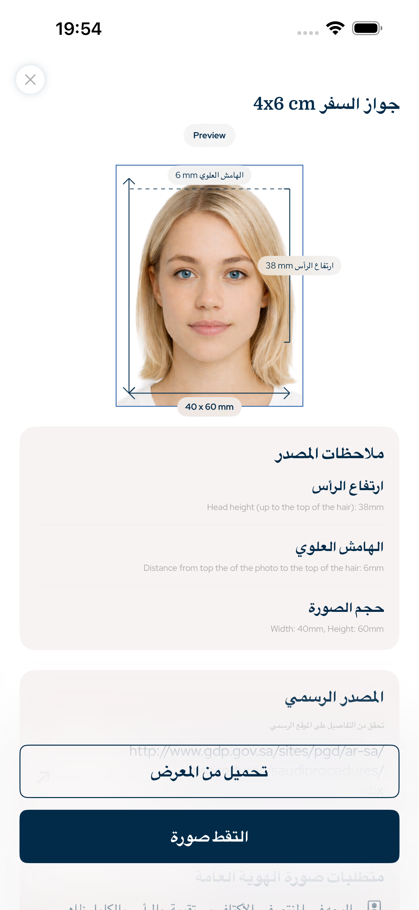

Saudi Arabia · تطبيق صورة جواز, صورة الهوية, صورة تأشيرة, صورة إقامة, صورة رسمية للايفون
صور جواز وهوية بالمقاس والتركيب الصحيحين
يساعدك هذا التطبيق على تجهيز صور الجواز، التأشيرة، الهوية والإقامة على iPhone مع ضبط مقاس الصورة، نسبة الرأس، المسافة العلوية، الخلفية والتصدير للطباعة أو الرفع الرقمي.
- الوجه
- بدون تعديل AI
- القص
- الرأس + المسافة العلوية
- التصدير
- رقمي + طباعة

المسافة العلوية
دقيقة
نسبة الرأس
موجّهة
متطلبات قابلة للبحث
مبني على قواعد الهندسة الرسمية للصور
يركز التطبيق على قواعد صور الوثائق القابلة للقياس: مقاس الصورة، تصدير البكسل، ارتفاع الرأس، موضع الوجه، المسافة العلوية، الخلفية وتخطيط الطباعة.
نسبة الرأس والمسافة العلوية
بدون تعديل ملامح الوجه بالذكاء الاصطناعي
تصدير رقمي أو ورقة طباعة
Saudi Arabia document types
الصور التي يمكن للتطبيق تجهيزها
تطبيق صور الجواز والهوية يغطي سير عمل الصور الرسمية الشائعة لمستخدمي iPhone الذين يحتاجون ملفاً رقمياً أو ورقة طباعة.
صورة جواز
صورة تأشيرة
صورة هوية
صورة إقامة
ورقة طباعة
نزاهة الصورة
بدون تعديل ملامح الوجه بالذكاء الاصطناعي
سير العمل عملي ومقصود: قص الصورة، محاذاة الرأس، الحفاظ على الوجه، تجهيز الخلفية، ثم تصدير المقاس الصحيح. مصمم لتجهيز صور الوثائق الرسمية، وليس لتجميل الوجه.
1اختر البلد والوثيقة
2اضبط الرأس والمسافة العلوية
3صدّر رقمياً أو ورقة طباعة
أسئلة
الأسئلة الشائعة
هل يغير التطبيق ملامح الوجه؟
لا. التطبيق لا يغيّر ملامح الوجه بالذكاء الاصطناعي، بل يركز على المقاس والقص والخلفية والتصدير.
هل يمكن استخدامه لصورة الجواز؟
نعم. اختر البلد ونوع الوثيقة، ثم صدّر الصورة بالمقاس والتركيب المناسبين.
هل يدعم الطباعة؟
نعم. يمكنك تصدير ملف رقمي أو ورقة جاهزة للطباعة.
تطبيق صور الجواز والهوية
حضّر صورة جواز أو تأشيرة أو هوية على iPhone مع مقاس الصورة ونسبة الرأس والمسافة العلوية والتصدير الرقمي أو الجاهز للطباعة.
حمّل من App Store